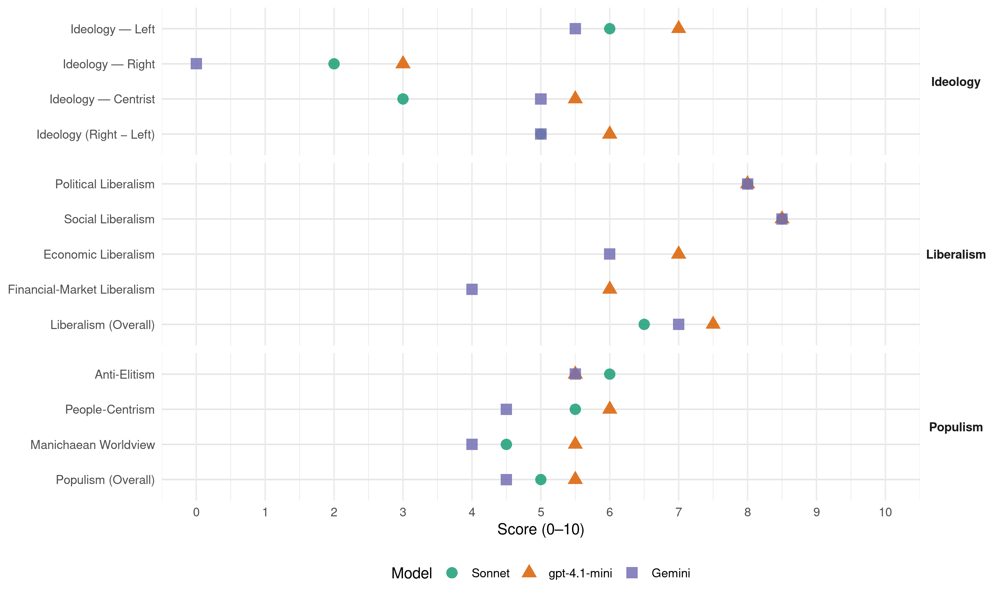

SNP (United Kingdom, 2019)
manifesto_id 51902_201912
Get full text: This site shows derived annotations and short verbatim quotes only. The full manifesto text is © Manifesto Project / WZB — obtain it via manifesto-project.wzb.eu using the manifesto_id above.
Headline scores
| Dimension | Sonnet | gpt-4.1-mini | Gemini |
|---|---|---|---|
| Populism (Overall) | 5.0 | 5.5 | 4.5 |
| Anti-Elitism | 6.0 | 5.5 | 5.5 |
| People-Centrism | 5.5 | 6.0 | 4.5 |
| Manichaean Worldview | 4.5 | 5.5 | 4.0 |
| Ideology (Right − Left) | 5.0 | 6.0 | 5.0 |
| Liberalism (Overall) | 6.5 | 7.5 | 7.0 |
| Political Liberalism | 8.0 | 8.0 | 8.0 |
| Social Liberalism | 8.5 | 8.5 | 8.5 |
| Economic Liberalism | – | 7.0 | 6.0 |
| Financial-Market Liberalism | – | 6.0 | 4.0 |
Evidence per dimension
Economic Liberalism
Gemini · score 5.0 · mixed · chunk 1
“support businesses need to grow and to boost productivity”
businesses in Scotland and we will demand the support businesses need to grow and to boost productivity.
Gemini · score 6.0 · verified · chunk 2
“creation of trade barriers and tariffs”
The sector has already estimated huge losses in annual value thanks to the creation of trade barriers and tariffs, as well as the loss of vital workers
gpt-4.1-mini · score 7.0 · verified · chunk 1
“SNP MPs will back improvements to tax collection and tougher action on tax avoidance”
SNP MPs will back improvements to tax collection and tougher action on tax avoidance, including: a review of the closure of HMRC offices in Scotland and across the UK, immediate action, including reform of Companies House, to uncover the beneficial ownership of Scottish Limited Partnerships, other companies and trusts.
gpt-4.1-mini · score 7.0 · verified · chunk 2
“supporting low income families by introducing payments”
We will also urge the UK Government to match our commitment to supporting low income families by introducing payments at key times in a young child’s life as the SNP Scottish government have done with nursery and school payments of £250 as well as matching the new Scottish Child Payment.
Sonnet · score 5.0 · mixed · chunk 1
“member of the world’s largest trading block and single market”
as part of the EU, we will be a member of the world’s largest trading block and single market, which is currently eight times the size of the UK alone
Sonnet · score 5.0 · mixed · chunk 2
“prevent damaging tariffs”
Should the UK leave the EU, we will fight to prevent damaging tariffs and for affected sectors like seafood, fisheries and red meat to be fully compensated.
Financial-Market Liberalism
Gemini · score 4.0 · verified · chunk 1
“reinstatement of the reverse burden of proof”
The SNP will support measures including the reinstatement of the reverse burden of proof which, before being removed by the Tories
gpt-4.1-mini · score 6.0 · verified · chunk 1
“SNP will press for the public interest to be fully protected in any future disposal of RBS shares”
The biggest corporate failure in recent years was the financial crash and it is vital that those responsible are held fully to account. The SNP will support measures including the reinstatement of the reverse burden of proof which, before being removed by the Tories, required senior bank managers to demonstrate they had done the right thing where wrongdoing had emerged on their watch.
Sonnet · score 5.0 · mixed · chunk 1
“reinstatement of the reverse burden of proof”
The SNP will support measures including the reinstatement of the reverse burden of proof which, before being removed by the Tories, required senior bank managers to demonstrate they had done the right thing
Political Liberalism
Gemini · score 8.0 · verified · chunk 1
“Standing Up for Democracy and The Rule of Law”
JOANNA CHERRY: Standing Up for Democracy and The Rule of Law The past three years have highlighted
Gemini · score 8.0 · verified · chunk 2
“defence of our democracy”
SNP MPs will always stand firm in defence of our democracy and the right of our people’s voice to be heard.
gpt-4.1-mini · score 8.0 · verified · chunk 1
“Joanna Cherry QC has led the battle to protect democracy and prevent the Tories from imposing lasting harm”
The past three years have highlighted the reality that the Tories simply do not care for democracy and will stop at nothing to pursue their own narrow party interests. With the Brexit chaos consuming Westminster, Joanna Cherry QC has led the battle to protect democracy and prevent the Tories from imposing lasting harm, while working to protect Scotland’s place in the EU.
gpt-4.1-mini · score 8.0 · verified · chunk 2
“defence of our democracy and the right of our people’s voice to be heard”
SNP MPs will always stand firm in defence of our democracy and the right of our people’s voice to be heard. Democratic Reform We will back the replacement of the first-past-thepost system with the Single Transferable Vote, a system that makes sure every vote and every part of the country counts. SNP MPs will continue to oppose the undemocratic House of Lords and vote for its abolition.
Sonnet · score 8.0 · verified · chunk 1
“unlawful attempt of an unelected Prime Minister to close down Parliament”
winning a victory that prevented the unlawful attempt of an unelected Prime Minister to close down Parliament and undermine democracy being successful
Sonnet · score 8.0 · verified · chunk 2
“replacement of the first-past-the-post system”
We will back the replacement of the first-past-thepost system with the Single Transferable Vote, a system that makes sure every vote and every part of the country counts.
Liberalism (Overall)
Gemini · score 6.0 · verified · chunk 1
“open, tolerant, inclusive and democratic nation”
allows Scotland to become the open, tolerant, inclusive and democratic nation we are determined to build.
Gemini · score 8.0 · verified · chunk 2
“improve human rights protection”
to develop a new statutory framework to improve human rights protection for everyone in Scotland.
gpt-4.1-mini · score 7.0 · verified · chunk 1
“Joanna Cherry QC has led the battle to protect democracy and prevent the Tories from imposing lasting harm”
The past three years have highlighted the reality that the Tories simply do not care for democracy and will stop at nothing to pursue their own narrow party interests. With the Brexit chaos consuming Westminster, Joanna Cherry QC has led the battle to protect democracy and prevent the Tories from imposing lasting harm, while working to protect Scotland’s place in the EU.
gpt-4.1-mini · score 8.0 · verified · chunk 2
“defence of our democracy and the right of our people’s voice to be heard”
SNP MPs will always stand firm in defence of our democracy and the right of our people’s voice to be heard. Democratic Reform We will back the replacement of the first-past-thepost system with the Single Transferable Vote, a system that makes sure every vote and every part of the country counts. SNP MPs will continue to oppose the undemocratic House of Lords and vote for its abolition.
Sonnet · score 6.0 · verified · chunk 1
“open, tolerant, inclusive and democratic nation”
because it allows Scotland to become the open, tolerant, inclusive and democratic nation we are determined to build
Sonnet · score 7.0 · verified · chunk 2
“SNP re-affirms its commitment to the Council of Europe”
The SNP re-affirms its commitment to the Council of Europe and the ECHR. SNP MPs will oppose any attempts by the UK government to scrap the Human Rights Act.
Anti-Elitism
Gemini · score 7.0 · verified · chunk 1
“Westminster has been shown to be broken”
Our Achievements at Westminster The Westminster system has been shown to be broken and incapable of meeting Scotland’s needs.
Gemini · score 4.0 · verified · chunk 2
“increasingly isolationist Tory government”
However, that is under threat from the increasingly isolationist Tory government that is intent on rolling back on these rights
gpt-4.1-mini · score 8.0 · verified · chunk 1
“Westminster is broken”
WESTMINSTER IS BROKEN This election really matters. At stake is who will decide Scotland’s future – Westminster leaders like Boris Johnson or the people who live here? People in Scotland are sick of Brexit and fed up with Westminster. It’s a mess.
gpt-4.1-mini · score 3.0 · verified · chunk 2
“the Tory government that is intent on rolling back on these rights”
However, that is under threat from the increasingly isolationist Tory government that is intent on rolling back on these rights – once again pulling up the ladder of opportunity from behind themselves. In Westminster, Stuart McDonald, the party’s Immigration spokesperson, has worked across party lines and with organisations, including the 3million campaign, to support EU nationals already living in Scotland and the UK, and to prevent the Tories from creating another Windrush scandal.
Sonnet · score 7.0 · verified · chunk 1
“Westminster is broken”
WESTMINSTER IS BROKEN This election really matters. At stake is who will decide Scotland’s future – Westminster leaders like Boris Johnson or the people who live here?
Sonnet · score 5.0 · verified · chunk 2
“chaotic Tory handling of Parliament”
The Bill fell as a result of the chaotic Tory handling of Parliament. Tariffs put many of Scotland’s key food exports
Ideology — Centrist
Gemini · score 5.0 · verified · chunk 1
“decisions about Scotland are taken by the people”
if decisions about Scotland are taken by the people of Scotland. It is our core belief
Gemini · score 5.0 · verified · chunk 2
“right of our people’s voice”
SNP MPs will always stand firm in defence of our democracy and the right of our people’s voice to be heard.
gpt-4.1-mini · score 6.0 · verified · chunk 1
“the people of Scotland have the right to choose their own future”
It is our core belief that responsibility for Scotland’s future should rest with all those who have made our country their home, no matter where they come from. At present, our future is not in our hands. It is in the hands of the Westminster Parliament and Government.
gpt-4.1-mini · score 5.0 · verified · chunk 2
“our people’s voice to be heard”
SNP MPs will always stand firm in defence of our democracy and the right of our people’s voice to be heard. Democratic Reform We will back the replacement of the first-past-thepost system with the Single Transferable Vote, a system that makes sure every vote and every part of the country counts. SNP MPs will continue to oppose the undemocratic House of Lords and vote for its abolition.
Sonnet · score 3.0 · verified · chunk 1
“Scotland’s future in Scotland’s hands”
Scotland’s future in Scotland’s hands We believe that the best future for Scotland is to be an independent, European nation.
Sonnet · score 3.0 · verified · chunk 2
“democratic institutions should be representative”
Our democratic institutions should be representative of and accountable to the people they represent.
Ideology — Left
Gemini · score 7.0 · verified · chunk 1
“opposing tax cuts for big business”
reject the ‘race to the bottom’ tax policy of the Tories, opposing tax cuts for big business and the wealthiest, instead supporting
Gemini · score 4.0 · verified · chunk 2
“supporting low income families”
We will also urge the UK Government to match our commitment to supporting low income families by introducing payments at key times
gpt-4.1-mini · score 8.0 · verified · chunk 1
“demand an end to austerity and instead press the UK Government to invest in public services and the economy”
We will not stand by whilst Scotland is denied its fair share of public spending. SNP MPs will demand an end to austerity and instead press the UK Government to invest in public services and the economy, starting with a reversal of the cut Scotland has seen to its real-terms budget.
gpt-4.1-mini · score 6.0 · verified · chunk 2
“supporting low income families”
We will also urge the UK Government to match our commitment to supporting low income families by introducing payments at key times in a young child’s life as the SNP Scottish government have done with nursery and school payments of £250 as well as matching the new Scottish Child Payment.
Sonnet · score 7.0 · verified · chunk 1
“end austerity and begin to replace the funds lost”
we will therefore not support any UK government that does not end austerity and begin to replace the funds lost over the last ten years
Sonnet · score 5.0 · verified · chunk 2
“fight for fair funding for Scottish farmers”
SNP MPs will fight to ensure funding over agriculture and rural policy is repatriated to Scotland…and will always fight for fair funding for Scottish farmers.
Ideology (Right − Left)
Gemini · score 6.0 · verified · chunk 1
“opposing Tory austerity and instead champion”
send a strong group of SNP MPs to Westminster to oppose Tory austerity and instead champion a social security system
Gemini · score 4.0 · verified · chunk 2
“right of our people’s voice”
SNP MPs will always stand firm in defence of our democracy and the right of our people’s voice to be heard.
gpt-4.1-mini · score 7.0 · verified · chunk 1
“Westminster is broken”
WESTMINSTER IS BROKEN This election really matters. At stake is who will decide Scotland’s future – Westminster leaders like Boris Johnson or the people who live here? People in Scotland are sick of Brexit and fed up with Westminster. It’s a mess.
gpt-4.1-mini · score 5.0 · verified · chunk 2
“the Tory government that is intent on rolling back on these rights”
However, that is under threat from the increasingly isolationist Tory government that is intent on rolling back on these rights – once again pulling up the ladder of opportunity from behind themselves. In Westminster, Stuart McDonald, the party’s Immigration spokesperson, has worked across party lines and with organisations, including the 3million campaign, to support EU nationals already living in Scotland and the UK, and to prevent the Tories from creating another Windrush scandal.
Sonnet · score 6.0 · verified · chunk 1
“reject the ‘race to the bottom’ tax policy of the Tories”
reject the ‘race to the bottom’ tax policy of the Tories, opposing tax cuts for big business and the wealthiest, instead supporting a crackdown on tax avoidance and evasion
Sonnet · score 4.0 · verified · chunk 2
“fight to maintain Scotland’s membership of the EU”
We will continue to fight to maintain Scotland’s membership of the EU to protect the future success of the industry.
Ideology — Right
Gemini · score 0.0 · verified · chunk 1
“stand firm against the demonisation of migrants”
hostile environment’ of the UK immigration system, and we will stand firm against the demonisation of migrants.
Gemini · score 0.0 · verified · chunk 2
“championed the benefits of immigration”
And unlike Labour and the Tories, Stuart McDonald has championed the benefits of immigration to Scotland – pressing the UK government to scrap its hostile environment
gpt-4.1-mini · score 3.0 · verified · chunk 1
“oppose in all its forms the ‘hostile environment’ of the UK immigration system”
We will seek the devolution of immigration powers so that Scotland can have an migration system that works for our economy and society. We will oppose in all its forms the ‘hostile environment’ of the UK immigration system, and we will stand firm against the demonisation of migrants.
gpt-4.1-mini · score 3.0 · verified · chunk 2
“hostile environment”
Unlike Labour, SNP MPs have been unequivocal in their support for free movement rights and opposed the Tory government’s toxic Tory Immigration Bill from the very beginning. It would be catastrophic for Scotland and would extend the Tories’ hostile environment. And unlike Labour and the Tories, Stuart McDonald has championed the benefits of immigration to Scotland – pressing the UK government to scrap its hostile environment or devolve the powers to the Scottish Parliament instead so we can put in place a tailored immigration system that addresses our social and economic needs.
Sonnet · score 2.0 · verified · chunk 1
“oppose in all its forms the ‘hostile environment’”
We will oppose in all its forms the ‘hostile environment’ of the UK immigration system, and we will stand firm against the demonisation of migrants.
Sonnet · score 2.0 · verified · chunk 2
“Scottish control of Scottish fisheries”
SNP MPs will fight for Scottish control of Scottish fisheries, as we have done for many years.
Manichaean Worldview
Gemini · score 5.0 · verified · chunk 1
“Tories simply do not care for democracy”
highlighted the reality that the Tories simply do not care for democracy and will stop at nothing to pursue
Gemini · score 3.0 · verified · chunk 2
“Tories betrayed our fishing industry”
The Tories betrayed our fishing industry in the 1970s, dismissing the livelihoods of our coastal communities as ‘expendable’.
gpt-4.1-mini · score 7.0 · verified · chunk 1
“Westminster is broken and incapable of meeting Scotland’s needs”
The Westminster system has been shown to be broken and incapable of meeting Scotland’s needs. However, SNP MPs have worked hard to stand up for Scotland and will continue to do so.
gpt-4.1-mini · score 4.0 · verified · chunk 2
“Tories’ hostile environment”
Unlike Labour, SNP MPs have been unequivocal in their support for free movement rights and opposed the Tory government’s toxic Tory Immigration Bill from the very beginning. It would be catastrophic for Scotland and would extend the Tories’ hostile environment. And unlike Labour and the Tories, Stuart McDonald has championed the benefits of immigration to Scotland – pressing the UK government to scrap its hostile environment or devolve the powers to the Scottish Parliament instead so we can put in place a tailored immigration system that addresses our social and economic needs.
Sonnet · score 5.0 · verified · chunk 1
“chaos of Brexit has exposed just how dysfunctional Westminster”
The chaos of Brexit has exposed just how dysfunctional Westminster really is. We have had an unelected Prime Minister with no mandate seek to impose a damaging Brexit on Scotland
Sonnet · score 4.0 · verified · chunk 2
“Tories betrayed our fishing industry”
The Tories betrayed our fishing industry in the 1970s, dismissing the livelihoods of our coastal communities as ‘expendable’.
People-Centrism
Gemini · score 6.0 · verified · chunk 1
“taken by the people of Scotland”
if decisions about Scotland are taken by the people of Scotland. It is our core belief
Gemini · score 3.0 · verified · chunk 2
“accountable to the people they represent”
Our democratic institutions should be representative of and accountable to the people they represent. In recent years, they have been under sustained attack.
gpt-4.1-mini · score 7.0 · verified · chunk 1
“the people of Scotland have the right to choose their own future”
It is our core belief that responsibility for Scotland’s future should rest with all those who have made our country their home, no matter where they come from. At present, our future is not in our hands. It is in the hands of the Westminster Parliament and Government.
gpt-4.1-mini · score 5.0 · verified · chunk 2
“our people’s voice to be heard”
SNP MPs will always stand firm in defence of our democracy and the right of our people’s voice to be heard. Democratic Reform We will back the replacement of the first-past-thepost system with the Single Transferable Vote, a system that makes sure every vote and every part of the country counts. SNP MPs will continue to oppose the undemocratic House of Lords and vote for its abolition.
Sonnet · score 7.0 · verified · chunk 1
“the people of Scotland have the right to choose”
a vote to endorse the following position: the people of Scotland have the right to choose their own future in a new referendum on becoming an independent country
Sonnet · score 4.0 · verified · chunk 2
“right of our people’s voice to be heard”
SNP MPs will always stand firm in defence of our democracy and the right of our people’s voice to be heard.
Populism (Overall)
Gemini · score 6.0 · verified · chunk 1
“Westminster is broken”
however they voted on Brexit, it is obvious that Westminster is broken. Three years of political chaos
Gemini · score 3.0 · verified · chunk 2
“increasingly isolationist Tory government”
However, that is under threat from the increasingly isolationist Tory government that is intent on rolling back on these rights
gpt-4.1-mini · score 7.0 · verified · chunk 1
“Westminster is broken”
WESTMINSTER IS BROKEN This election really matters. At stake is who will decide Scotland’s future – Westminster leaders like Boris Johnson or the people who live here? People in Scotland are sick of Brexit and fed up with Westminster. It’s a mess.
gpt-4.1-mini · score 4.0 · verified · chunk 2
“the Tory government that is intent on rolling back on these rights”
However, that is under threat from the increasingly isolationist Tory government that is intent on rolling back on these rights – once again pulling up the ladder of opportunity from behind themselves. In Westminster, Stuart McDonald, the party’s Immigration spokesperson, has worked across party lines and with organisations, including the 3million campaign, to support EU nationals already living in Scotland and the UK, and to prevent the Tories from creating another Windrush scandal.
Sonnet · score 6.0 · verified · chunk 1
“Westminster politicians or the people who live here”
The question we face as a country is this: who has the right to determine our future, Westminster politicians or the people who live here?
Sonnet · score 4.0 · verified · chunk 2
“toxic Tory Immigration Bill from the very beginning”
SNP MPs have been unequivocal in their support for free movement rights and opposed the Tory government’s toxic Tory Immigration Bill from the very beginning.
Social Liberalism